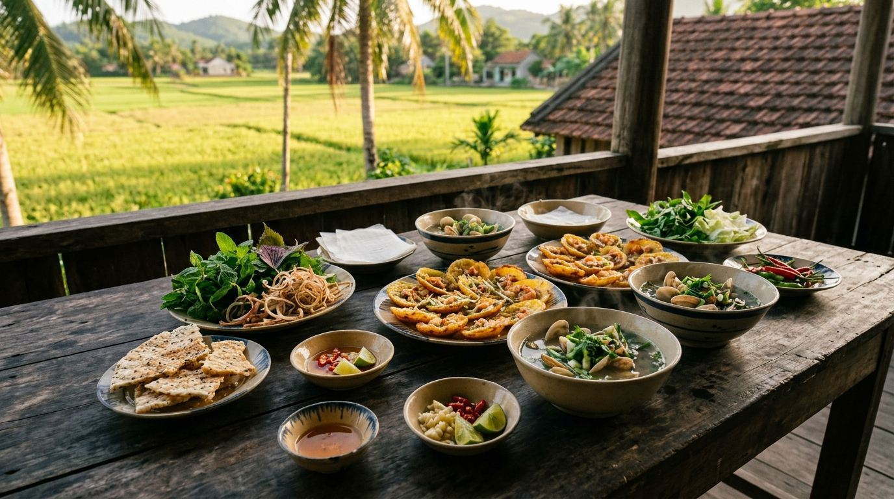

Đặc Sản Xứ Quảng
“Đậm Đà Vị Quê – Trọn Tình Xứ Quảng”
Nơi lưu giữ, giới thiệu và lan tỏa hương vị nguyên bản của mảnh đất Núi Ấn – Sông Trà: từ tô don nóng ven đê, chén bánh bèo phố thị, tỏi thơm đảo Lý Sơn đến hương quế đại ngàn Trà Bồng.
Giao thoa kỳ diệu giữa Biển Đảo, Sông Đồng & Núi Rừng
Không ồn ào cầu kỳ, ẩm thực Quảng Ngãi chinh phục lòng người bằng sự chân chất, mộc mạc và vị đậm đà khó quên. Địa hình trải dài từ núi cao phía tây, đồng bằng ven sông Trà Khúc đến những bãi biển và đảo núi lửa Lý Sơn đã tạo nên một kho tàng sản vật hiếm vùng nào có được.
Dù bạn là du khách lần đầu đặt chân đến xứ Quảng, người yêu ẩm thực Việt hay người con xa quê đang tìm lại hương vị tuổi thơ, mỗi trang cẩm nang ở đây là một lời mời thưởng thức trọn vẹn văn hóa của vùng đất nghĩa tình này.
Lý Sơn & Nghĩa An
Mặn mòi vị biển với tỏi cô đơn, cua huỳnh đế, nhum biển, rong biển và bún cá ngừ tươi.
Sông Trà & Phố thị
Nước lợ sinh con don, bãi bồi trồng bắp làm ram, làng nghề giữ lửa kẹo gương, mạch nha.
Vùng cao Trà Bồng
Hương quế đại ngàn của đồng bào Cor và vị trong veo, đăng đắng của cá niên suối nguồn.

6 Món Đặc Sản Nổi Bật Nhất
Những hương vị làm nên thương hiệu ẩm thực Quảng Ngãi. Nhấn vào từng món để xem đầy đủ xuất xứ, nguyên liệu, cách chế biến và bí quyết thưởng thức chuẩn người Quảng.
Khám Phá Theo Từng Khu Vực
Mỗi vùng đất của Quảng Ngãi mang một phong vị riêng biệt. Nhấn vào khu vực bạn quan tâm để lọc ngay các món đặc sản bản địa, hoặc mở “Cẩm nang” để tìm hiểu sâu về vùng đất ấy.
Toàn Bộ Đặc Sản Quảng Ngãi
Tra cứu theo 6 nhóm món, lọc theo khu vực địa lý hoặc tìm kiếm nhanh (hỗ trợ gõ tiếng Việt không dấu).
Chuyện Nghề, Chuyện Mùa Xứ Quảng
Đằng sau mỗi món đặc sản là câu chuyện của dòng sông, mùa nắng gió và đôi bàn tay bền bỉ của người dân Quảng Ngãi qua bao thế hệ.
Cùng Lưu Giữ Hương Vị Quê Nhà Quảng Ngãi
Đặc Sản Xứ Quảng là cẩm nang giới thiệu văn hóa ẩm thực địa phương theo từng vùng miền. Nếu bạn muốn đóng góp câu chuyện món ngon, địa danh làng nghề hoặc cần tư vấn tìm hiểu ẩm thực khi ghé thăm Quảng Ngãi, hãy liên hệ với chúng tôi.